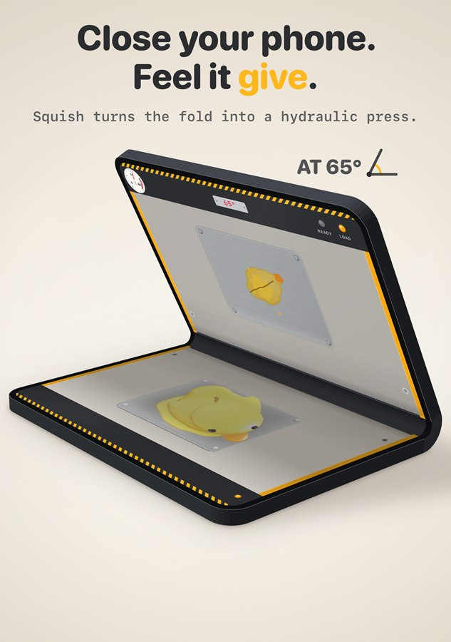
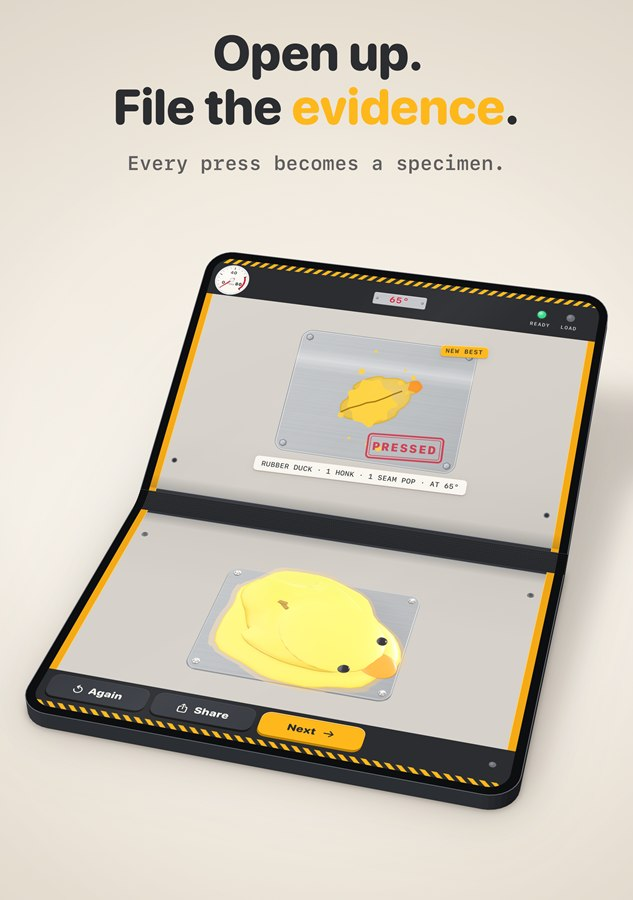
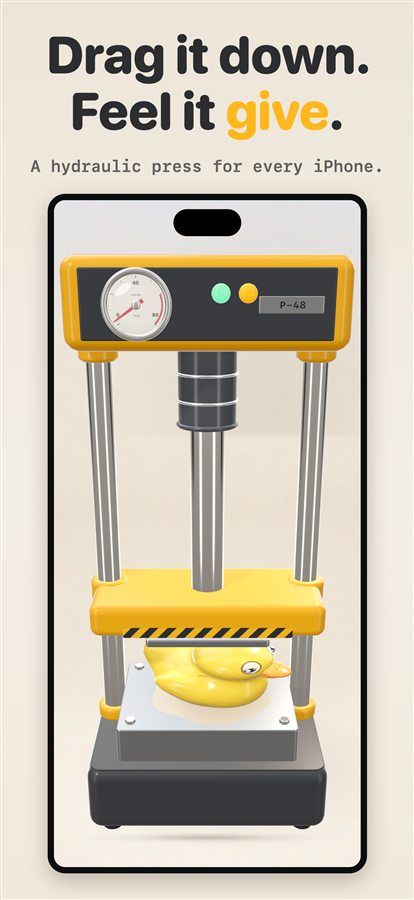
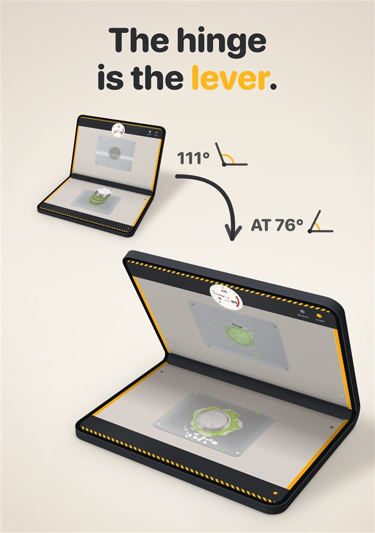

Squish: Fold-to-Crush Press
Your phone is now a hydraulic press.
Put a virtual object on the inner screen of your iPhone Duo and close it slowly. The press follows your hand, degree by degree, and you see, hear and feel the object give. On any other iPhone, drag it down.
Coming to the App Store on 24 Nov 2026
£2.49 / $2.49, once. No ads. No in-app purchases. No data collected.



How it works
Close slowly. Feel it give.
-
Pick an object
Bubble wrap, a rubber duck, an egg, a glass bottle and more. Ten at launch: six from the start, the rest unlocked just by playing.
-
Close your phone
On iPhone Duo, the hinge angle drives the press. Stop halfway and it stops; ease off and it lifts. Every crack has its own sound and haptic.
-
Ka-chunk
Close it all the way to seal the press. The cover display shows the sealed press and tells you to open it.
-
Open to collect
Your object comes out flattened and stamped as a pressed specimen, filed on your shelf. Share a clip or image if you like.
Made for the fold
The hinge is the lever.
The two halves of the iPhone Duo's inner screen are the press plates. The further you close, the harder it presses, in real time.
No iPhone Duo? Every other iPhone gets the P-48, a bench press you drag down with one finger. Same engine, same objects, same crunch. On a Duo you can switch to dragging too, with Press without folding in Settings.
Everything in Squish happens on screen. Please never close your phone on anything real.

The deal